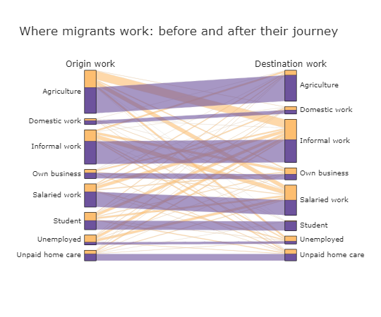
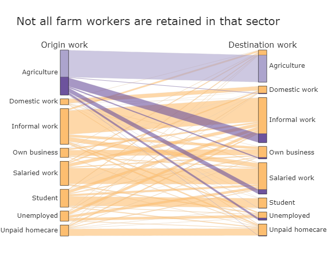
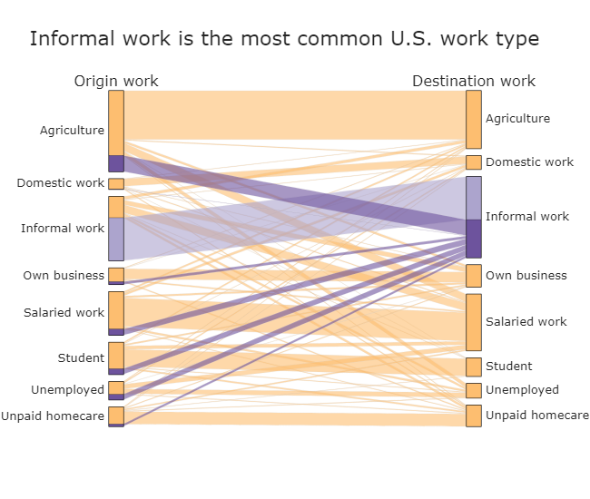
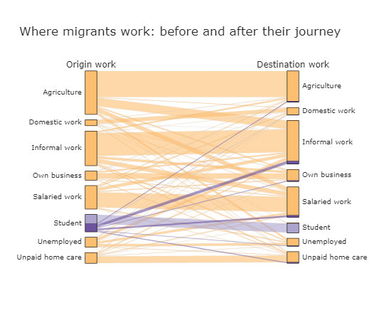

Migration's Mutual Benefits
How Central American migrants are supporting local economies and their families back home
Ilham Ali and Will Atkinson
Increasing migration from the Central American countries of Guatemala, Honduras, and El Salvador has been covered widely in the popular press. But beyond sweeping statements made about immigrant groups, the dynamics of migration for the individual are not well understood. When conditions are right, migration can bring mutual benefits -- supporting local economies in the U.S. as well as the migrants' families back home.
Join us as we explore the numbers behind these stories. Scroll or click below to get started:
The Journey: Where migrants settle in the United States
Local Jobs: Where migrants work in their chosen destinations
Family Needs: How migrants support their faraway homes
The Journey
Immigrants from Guatemala, Honduras, and El Salvador go on to live in varied places across the United States.
These people most often settle in Los Angeles County, California and Harris County, Texas (home to Houston).
Many also live near Washington, D.C. or in southern Florida. Each area has varying cultures, lifestyles, and cost of living.
The map details the top three U.S. counties that are now home for Northern Triangle migrants -- while showing just a fraction of the 3 million U.S. immigrants from these nations.
Their heritage and skills enrich communities across the U.S. -- including tens to hundreds of thousands of jobs in some areas.

Source: Migration Policy Institute (via the 2015-2019 American Community Survey)
Local Jobs
These incoming workers are increasingly essential to U.S. economies. H-2A visas for immigrant farm workers have tripled in less than a decade, and more than half of farm businesses would be at least “somewhat likely” to go out of business without them (according to USA Farm Labor surveys). Immigrants could play an even larger role in the future, as U.S. labor projections point to rising demand for entry-level needs like health aides and restaurant work.
According to recent survey data from the United Nations World Food Programme (UN WFP), more than half of the Northern Triangle migrants surveyed have continued their past type of work. These workers bring valuable experience to their destinations, while others find new roles entirely. Data shows that unemployment is very low among these populations -- under 1% in most cases -- and a small fraction of the U.S. average as a whole. These, and other transitions in work lifestyle, represent big changes for the migrants who experience them.
Agriculture is a key example -- as the most common work type before migration but not after. Central American countries receive just a small fraction of H-2A farm worker visas, despite this opportunity. As a result, some past farm workers move to informal labor sectors, such as chicken plants and factories -- while others become salaried employees in various sectors like transportation.
In destination countries like the U.S., informal work is the most common result, attracting migrants across their previous work types.
And a large number of students find employment upon arrival, making their early entrance into the workforce and starting careers.
.
Want to dig deeper? Explore for yourself by hovering over the image with your cursor. These paths reflect the past and present journeys of more than 1,300 Northern Triangle migrants -- as surveyed by the UN World Food Programme in 2020. Nearly all chose the United States as their destination, though precise locations were not reported for privacy reasons.
   
Source: UN WFP Survey (2020). Responses of "Does not apply", "Other", or "NS / NR" (blank) are not shown.
Source: UN WFP Survey (2020). Responses of "Does not apply", "Other", or "NS / NR" (blank) are not included in the diagram.
Family Needs
Having found work in their new community, migrants often send money to their families back home in the form of remittances.
But how does this look in practice? Let's consider a worker's income, represented by this series of bubbles.
According to the UN, just 15% of migrants' earnings are sent to families on average -- meaning that the vast majority can benefit local economies in the U.S.
Nonetheless, remittances are a critical income source for many relatives back home -- supporting one in nine families globally and about one in four in the UN WFP survey of Northern Triangle households.
The vast majority of these households use remittances for basic needs like food, health, and utility services.
Of the survey's 1300+ households that received remittances, nearly 90% noted food among their uses.
Hover over the visual to learn more...
Of a worker's income...
Most stays local, while some is sent back to families...
...Where most households use the money for basic needs.
Source: UN WFP Survey (2020). Responses of "Does not apply", "Other", or "NS / NR" (blank) are not included in the diagram.
.
Final Thoughts
By understanding the journey to a new location, career, and lifestyle, we can start to learn more about the daily experiences of migrants who are adjusting to a wave of changes.
We hope to begin telling a more nuanced story about the realities and decisions these people face.
What could this information lead to? By highlighting the immense challenge of migration and employment, these findings could support calls for social protection programs
(to stabilize home country conditions) as well as improved legal pathways for those who do wish to migrate.
And despite the increasing role of remittances, transaction costs are reducing the direct flow of funds to families in need.
You can find more details about the survey data -- and their broader implications -- in the following links.
Acknowledgments
This website represents our final project for MIT's Fall 2021 course in Big Data, Visualization and Society (11.454).
We greatly appreciate the guidance of Ashley Louie, Niko McGlashan, Alberto Meouchi, and the full teaching staff led by Professor Sarah Williams.
We also received helpful feedback from Rosella Bottone and others from our partners at the UN WFP and Migration Policy Institute.